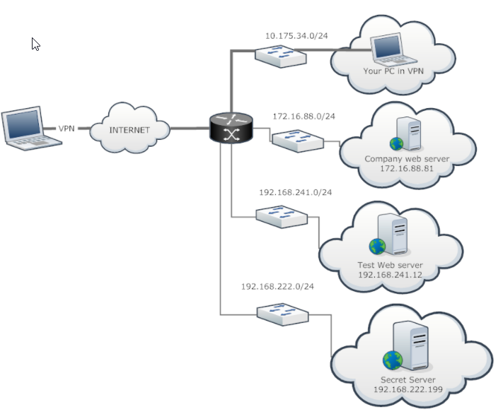
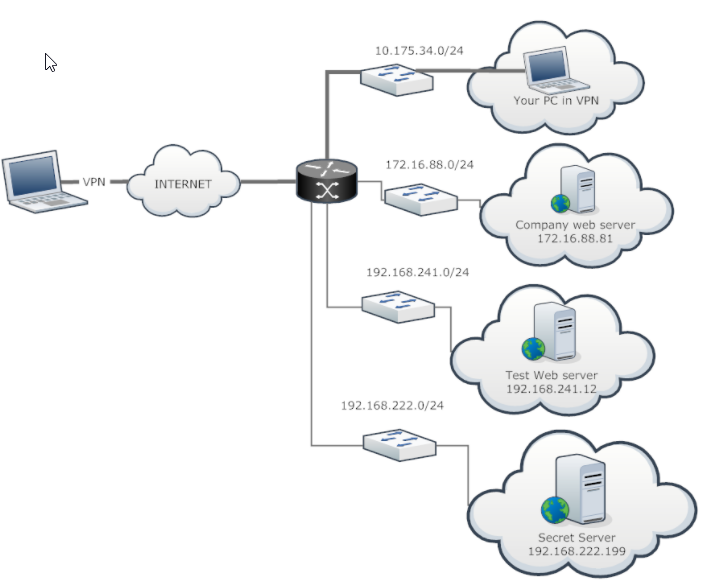

Add route on Linux using ip
The easiest way to add a route on Linux is to use the “ip route add” command followed by the network address to be reached and the gateway to be used for this route.
$ ip route add <network_ip>/<cidr> via <gateway_ip>
# Example
$ ip route add 10.0.3.0/24 via 10.0.3.1
However, if you want to have a specific device, you can add it to the end of the command.
$ ip route add <network_ip>/<cidr> via <gateway_ip> dev <network_card_name>
------------------------------------------------------------------------------------
Example Lab
Situation:
web servers that can be connected to already
192.168.241.12
172.16.88.81
cannot connect to 192.168.222.199
Checking the route table:

We see the route to those networks are already in place
So we need to add another to 192.168.222.0/24
Gateway <Seen in the route table>
Add route knowing the gateway and IP
> ip route add 192.168.222.0/24 via 10.175.34.1 dev tap0
 
